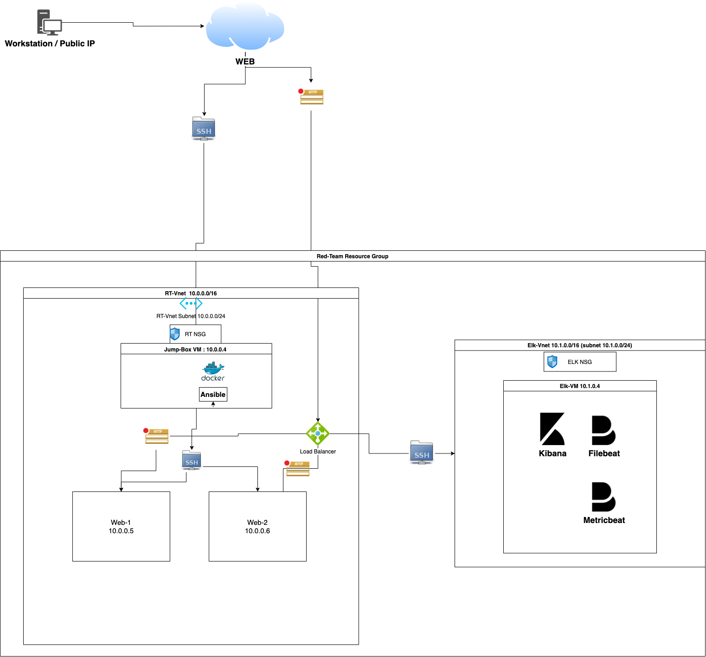
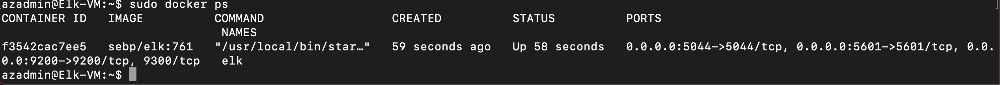

The files in this repository were used to configure the network depicted below.
 These files have been tested and used to generate a live ELK deployment on Azure. They can be used to either recreate the entire deployment pictured above. Alternatively, select portions of the YAML___ file may be used to install only certain pieces of it, such as Filebeat.
This document contains the following details: - Description of the Topology - Access Policies - ELK Configuration - Beats in Use - Machines Being Monitored - How to Use the Ansible Build
The main purpose of this network is to expose a load-balanced and monitored instance of DVWA, the Damn Vulnerable Web Application.
Load balancing ensures that the application will be highly Available, in addition to restricting _traffic_ to the network. -What aspect of security do load balancers protect? What is the advantage of a jump box?_Availability, Web Traffic, Web Security.
Integrating an ELK server allows users to easily monitor the vulnerable VMs for changes to the _____ and system _____.
Logfiles in specified paths or files to indexed for monitoring or reiview
Metric statistics of a given machine such as memory and CPU usage
The configuration details of each machine may be found below. Note: Use the Markdown Table Generator to add/remove values from the table.
| Name | Function | IP Address | Operating System |
|---|---|---|---|
| Jump Box | Gateway | 10.0.0.4 | Linux |
| WEB1 | Web Server | 10.0.0.5 | Linux |
| WEB2 | Web Server | 10.0.0.6 | Linux |
| ELK | ELK Server | 10.1.0.4 | Linux |
The machines on the internal network are not exposed to the public Internet.
Only the Jumpbox_ machine can accept connections from the Internet. Access to this machine is only allowed from the following IP addresses:
Machines within the network can only be accessed by SSH_.
Jump-Box-Provisioner(10.0.0.4 via SSH :22) , Workstation Public IP (47.36.48.32)
A summary of the access policies in place can be found in the table below.
| Name | Publicly Accessible | Allowed IP Addresses |
|---|---|---|
| Jump Box | No | 47.36.48.32 |
| Web1 | No | 10.0.0.4 |
| Web2 | No | 10.0.0.4 |
| Elk | No | 47.36.48.32 |
Ansible was used to automate configuration of the ELK machine. No configuration was performed manually, which is advantageous because… - What is the main advantage of automating configuration with Ansible?
Ansible allows efficient deployment of listed tasks by configuring a playbook file to get a machine to automate a set of tasks specified in the configured playbook._
The playbook implements the following tasks:
In 3-5 bullets, explain the steps of the ELK installation play. E.g., install Docker; download image; etc._
The following screenshot displays the result of running docker ps after successfully configuring the ELK instance.

This ELK server is configured to monitor the following machines: - List the IP addresses of the machines you are monitoring_10.0.0.5, 10.0.0.6
We have installed the following Beats on these machines:
These Beats allow us to collect the following information from each machine:
In order to use the playbook, you will need to have an Ansible control node already configured. Assuming you have such a control node provisioned:
SSH into the control node and follow the steps below:
Copy the playbook file to web1 &2__.
Update the config___ file to include. web1 &2
Run the playbook, and navigate to ./ansible_ to check that the installation worked as expected.
_Which file is the playbook? Where do you copy it?
_Which file do you update to make Ansible run the playbook on a specific machine? How do I specify which machine to install the ELK server on versus which to install Filebeat on?
_Which URL do you navigate to in order to check that the ELK server is running?
As a Bonus, provide the specific commands the user will need to run to download the playbook, update the files, etc.
curl -L -O <path to playbook>
nano <file to update>
ansible-playbook <playbook yaml>
ansible <remote server> -m copy -a "src=<sourcepath> dest=<destinationpath> owner=<owner> group=<group> mode=0644"